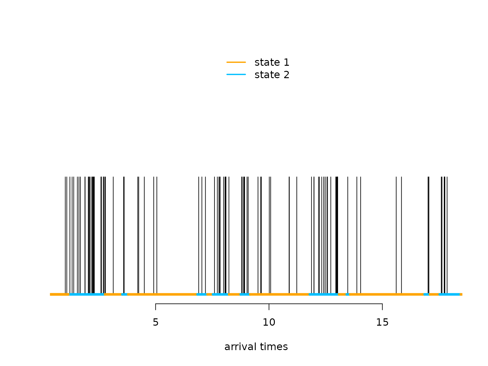
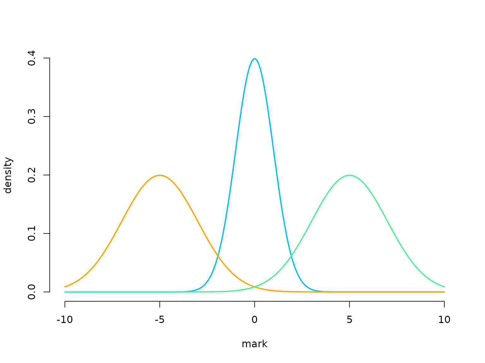
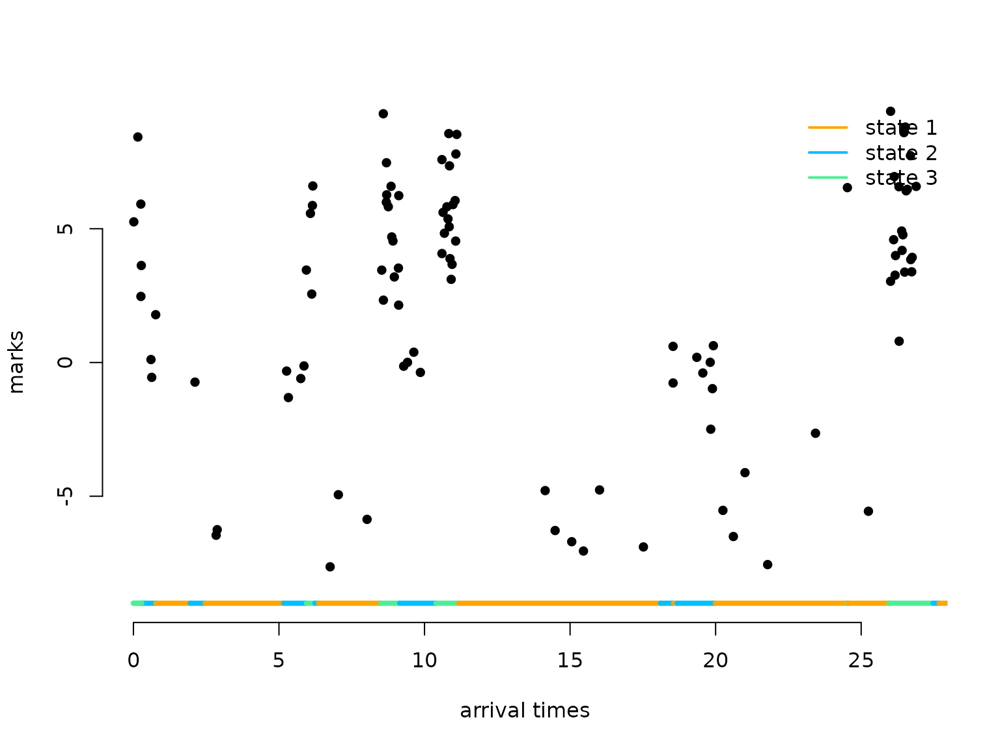

Markov-modulated (marked) Poisson processes
Jan-Ole Koslik
MMMPPs.RmdBefore diving into this vignette, we recommend reading the vignettes Introduction to LaMa and Continuous-time HMMs.
LaMa can also be used to fit so-called
Markov-modulated Poisson processes. These are doubly
stochastic Poisson point processes where the intensity is directed by an
underlying continuous-time Markov chain. Such processes are useful for
modelling arrival times, for example of calls in a call
center, or patients in the hospital. The main difference compared to
continuous-time HMMs is the arrival or observation
times themselves carry information on
the latent state process. To capture this information,
we need to model them explicitely as random-variables.
A homogeneous Poisson process is mainly characterised by the fact that the number of arrivals within a fixed time interval is Poisson distributed with a mean that is proporional to the length of the interval. The waiting times between arrivals are exponentially distributed. While the latter is not true for non-homogeneous Poisson processes in general, we can interpret a Markov modulated Poisson process as alternating between homogeneous Poisson processes, i.e. when the unobserved continuous-time Markov chain stays in a particular state for some interval, the associated Poisson rate in that interval is homogeneous and state-specific. To learn more about Poisson processes, see Dobrow (2016).
Example 1: Markov-modulated Poisson processes
Setting parameters
We choose to have a considerably higher rate and shorter stays of the underlying Markov chain in state 2, i.e. state 2 is bursty.
Simulating an MMPP
set.seed(123)
k = 200 # number of state switches
trans_times = s = rep(NA, k) # time points where the chain transitions
s[1] = sample(1:2, 1) # initial distribuion c(0.5, 0.5)
# exponentially distributed waiting times
trans_times[1] = rexp(1, -Q[s[1],s[1]])
# in a fixed interval, the number of arrivals is Pois(lambda * interval_length)
n_arrivals = rpois(1, lambda[s[1]]*trans_times[1])
# arrival times within fixed interval are uniformly distributed
arrival_times = runif(n_arrivals, 0, trans_times[1])
for(t in 2:k){
s[t] = c(1,2)[-s[t-1]] # for 2-states, always a state swith when transitioning
# exponentially distributed waiting times
trans_times[t] = trans_times[t-1] + rexp(1, -Q[s[t], s[t]])
# in a fixed interval, the number of arrivals is Pois(lambda * interval_length)
n_arrivals = rpois(1, lambda[s[t]]*(trans_times[t]-trans_times[t-1]))
# arrival times within fixed interval are uniformly distributed
arrival_times = c(arrival_times,
runif(n_arrivals, trans_times[t-1], trans_times[t]))
}
arrival_times = sort(arrival_times)Let’s visualise the simulated MMPP
n = length(arrival_times)
color = c("orange", "deepskyblue")
plot(arrival_times[1:100], rep(0.5,100), type = "h", bty = "n", ylim = c(0,1),
yaxt = "n", xlab = "arrival times", ylab = "")
segments(x0 = c(0,trans_times[1:98]), x1 = trans_times[1:99],
y0 = rep(0,100), y1 = rep(0,100), col = color[s[1:99]], lwd = 4)
legend("top", lwd = 2, col = color, legend = c("state 1", "state 2"), box.lwd = 0) What makes the MMPP special compared to a regular Poisson point process is its burstiness when the Markov chain is in the second state.
Writing the negative log-likelihood function
The likelihood of a stationary MMPP for waiting times is (Meier-Hellstern (1987), Langrock, Borchers, and Skaug (2013)) $$ L(\theta) = \pi \Bigl(\prod_{i=1}^n \exp\bigl((Q-\Lambda)x_i\bigr)\Lambda \Bigr)1, $$ where is the generator matrix of the continuous-time Markov chain, is a diagonal matrix of state-dependent Poisson intensities, is the stationary distribution of the continuous-time Markov chain, and is a column vector of ones. For more details on continuous-time Markov chains, see the vignette continuous-time HMMs or also Dobrow (2016).
We can easily calculate the log of the above expression using the
standard implementation of the general forward algorithm
forward_g() when choosing the first matrix of
state-dependent densities to be the identity (i.e.) the first row of the
allprobs matrix to be one and all other matrices of
state-dependent density matrices to be
.
nll = function(par, timediff, N){
lambda = exp(par[1:N]) # state specific rates
Q = generator(par[N+1:(N*(N-1))])
Pi = stationary_cont(Q)
Qube = tpm_cont(Q - diag(lambda), timediff) # exp((Q-Lambda) * dt)
allprobs = matrix(lambda, nrow = length(timediff + 1), ncol = N, byrow = T)
allprobs[1,] = 1
-forward_g(Pi, Qube, allprobs)
}Fitting an MMPP to the data
par = log(c(2, 15, # lambda
2, 0.5)) # off-diagonals of Q
timediff = diff(arrival_times)
system.time(
mod <- nlm(nll, par, timediff = timediff, N = 2, stepmax = 10)
)
#> user system elapsed
#> 0.281 0.267 0.279
# we often need the stepmax, as the matrix exponential can be numerically unstableResults
(lambda = exp(mod$estimate[1:2]))
#> [1] 1.949689 15.083121
(Q = generator(mod$estimate[3:4]))
#> S1 S2
#> S1 -0.4003955 0.4003955
#> S2 1.8998848 -1.8998848
(Pi = stationary_cont(Q))
#> S1 S2
#> 0.8259362 0.1740638Example 2: Markov-modulated marked Poisson processes
Such processes can also carry additional information, so called marks, at every arrival time when we also observe the realisation of a different random variable that only depends on the underlying states of the continuous-time Markov chain. For example for patient arrivals in the hospital we could observe a biomarker at every arrival time. Information on the underlying health status is then present in both the arrival times (because sick patients visit more often) and the biomarkers.
# state-dependent rates
lambda = c(1, 5, 20)
# generator matrix of the underlying Markov chain
Q = matrix(c(-0.5, 0.3, 0.2,
0.7, -1, 0.3,
1, 1, -2), nrow = 3, byrow = TRUE)
# parmeters for distributions of state-dependent marks
# (here normally distributed)
mu = c(-5, 0, 5)
sigma = c(2, 1, 2)
color = c("orange", "deepskyblue", "seagreen2")
curve(dnorm(x, 0, 1), xlim = c(-10,10), bty = "n", lwd = 2, col = color[2],
n = 200, ylab = "density", xlab = "mark")
curve(dnorm(x, -5, 2), add = TRUE, lwd = 2, col = color[1], n = 200)
curve(dnorm(x, 5, 2), add = TRUE, lwd = 2, col = color[3], n = 200)
Simulating an MMMPP
We now show how to simulate an MMMPP and additionally how to generalise to more than two hidden states.
set.seed(123)
k = 200 # number of state switches
trans_times = s = rep(NA, k) # time points where the chain transitions
s[1] = sample(1:3, 1) # initial distribuion uniformly
# exponentially distributed waiting times
trans_times[1] = rexp(1, -Q[s[1],s[1]])
# in a fixed interval, the number of arrivals is Pois(lambda * interval_length)
n_arrivals = rpois(1, lambda[s[1]]*trans_times[1])
# arrival times within fixed interval are uniformly distributed
arrival_times = runif(n_arrivals, 0, trans_times[1])
# marks are iid in interval, given underlying state
marks = rnorm(n_arrivals, mu[s[1]], sigma[s[1]])
for(t in 2:k){
# off-diagonal elements of the s[t-1] row of Q divided by the diagonal element
# give the probabilites of the next state
s[t] = sample(c(1:3)[-s[t-1]], 1, prob = Q[s[t-1],-s[t-1]]/-Q[s[t-1],s[t-1]])
# exponentially distributed waiting times
trans_times[t] = trans_times[t-1] + rexp(1, -Q[s[t],s[t]])
# in a fixed interval, the number of arrivals is Pois(lambda * interval_length)
n_arrivals = rpois(1, lambda[s[t]]*(trans_times[t]-trans_times[t-1]))
# arrival times within fixed interval are uniformly distributed
arrival_times = c(arrival_times,
runif(n_arrivals, trans_times[t-1], trans_times[t]))
# marks are iid in interval, given underlying state
marks = c(marks, rnorm(n_arrivals, mu[s[t]], sigma[s[t]]))
}
arrival_times = sort(arrival_times)Let’s visualise the simulated MMMPP
n = length(arrival_times)
plot(arrival_times[1:100], marks[1:100], pch = 16, bty = "n",
ylim = c(-9,9), xlab = "arrival times", ylab = "marks")
segments(x0 = c(0,trans_times[1:98]), x1 = trans_times[1:99],
y0 = rep(-9,100), y1 = rep(-9,100), col = color[s[1:99]], lwd = 4)
legend("topright", lwd = 2, col = color,
legend = c("state 1", "state 2", "state 3"), box.lwd = 0)
Writing the negative log-likelihood function
The likelihood of a stationary MMMPP for waiting
times
between marks
only changes slightly from the MMPP likelihood, as we include the matrix
of state-specific densities (Lu (2012), Mews
et al. (2023)): $$
L(\theta) = \pi P(y_0) \Bigl(\prod_{i=1}^n \exp\bigl((Q-\Lambda)
x_i\bigr)\Lambda P(y_i) \Bigr)1,
$$ where
,
and
are as above and
is a diagonal matrix with state-dependent densites for the observation
at time
.
We can again easily calculate the log of the above expression using the
standard implementation of the general forward algorithm
forward_g() when first calculating the
allprobs matrix with state-dependent densities for the
marks (as usual for HMMs) and then multiplying each row except the first
one element-wise with the state-dependent rates.
nllMark = function(par, y, timediff, N){
lambda = exp(par[1:N]) # state specific rates
mu = par[N+1:N]
sigma = exp(par[2*N+1:N])
Q = generator(par[3*N+1:(N*(N-1))])
Pi = stationary_cont(Q)
Qube = tpm_cont(Q-diag(lambda), timediff) # exp((Q-Lambda)*deltat)
allprobs = matrix(1, length(y), N)
for(j in 1:N) allprobs[,j] = dnorm(y, mu[j], sigma[j])
allprobs[-1,] = allprobs[-1,] * matrix(lambda, length(y) - 1, N, byrow = T)
-forward_g(Pi, Qube, allprobs)
}Fitting an MMMPP to the data
par = c(loglambda = log(c(1, 5, 20)), # lambda
mu = c(-5, 0, 5), # mu
logsigma = log(c(2, 1, 2)), # sigma
qs = log(c(0.7, 1, 0.3, 1, 0.2, 0.3))) # Q
timediff = diff(arrival_times)
system.time(
mod2 <- nlm(nllMark, par, y = marks, timediff = timediff, N = 3, stepmax = 5)
)
#> user system elapsed
#> 2.850 3.861 2.285Results
N = 3
(lambda = exp(mod2$estimate[1:N]))
#> [1] 0.9646715 4.8640550 19.5008965
(mu = mod2$estimate[N+1:N])
#> [1] -5.18540508 -0.09097055 4.80538783
(sigma = exp(mod2$estimate[2*N+1:N]))
#> [1] 1.7931062 0.9644485 2.0093266
(Q = generator(mod2$estimate[3*N+1:(N*(N-1))]))
#> S1 S2 S3
#> S1 -0.5909290 0.2788642 0.3120648
#> S2 0.9258939 -1.1798377 0.2539439
#> S3 1.1933693 1.2097188 -2.4030882
(Pi = stationary_cont(Q))
#> S1 S2 S3
#> 0.6296990 0.2609524 0.1093485